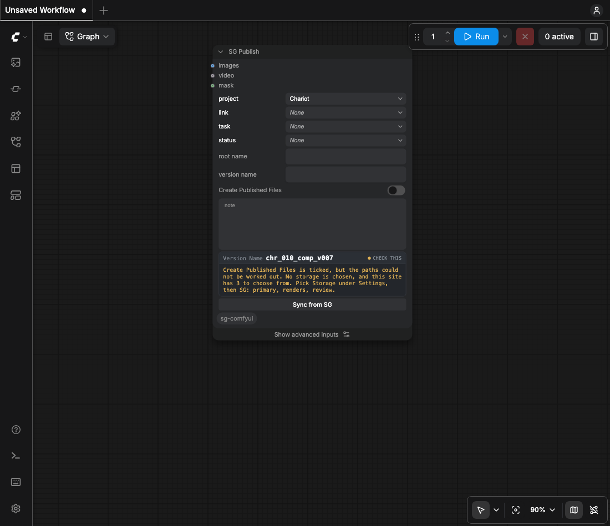

Storage and paths
A PublishedFile's path is under one of your site's Local File Storage roots. The server refuses any other path.
Copying
- ComfyUI writes the frames to its own output directory. The node copies them under the root.
- Originals are never moved.
- A publish that fails after the copy names the copies it left. Nothing is deleted, so a second attempt costs a copy rather than a re-render.
- A re-run overwrites the same paths.

Path templates
Sequence path, Still path and Movie path, under Settings, then SG, SG Publish Defaults. A batch of one frame takes Still path. The same three are advanced inputs on SG Publish: a filled one applies to that publish, an empty one shows the Settings template greyed inside the field.
{entity}/{root_name}/{version_name}/{version_name}.%04d{ext}
{entity}/{root_name}/{version_name}{ext}
{entity}/{root_name}/{version_name}{ext}Tokens
| token | what it is |
|---|---|
{version} | the publish revision |
%04d #### @@@@ | the frame number |
{entity.Shot.code} | a dotted field path, to any depth |
{version:03d} | Python's format spec |
[optional blocks] | dropped when the fields inside are empty |
v%04d | printf padding, a synonym for a version spec |
A token with no value drops out with its separator. The extension follows the files, not the
template. tools/doctor.py renders every template in the profile against a sample
publish and names any token that comes back with nothing.
Windows notation
Settings, then SG, Operating system sets the notation the path is written in, so a mac publish can
write a Windows path. The profile key is path_platform.
Sequences
The only out-of-the-box way to register an image sequence is a PublishedFile linked to the Version.
Tick Create Published Files. A clip beside frames stays review only until register_movie is true.
The keys are on the profile page.